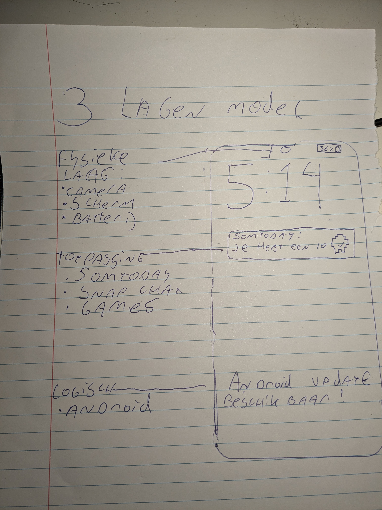

Wat is het 3 lagen model?
Het 3-lagen model van een telefoon is een manier om te begrijpen hoe een telefoon werkt door het op te splitsen in drie verschillende lagen. Elke laag heeft zijn eigen doel en samen zorgen ze ervoor dat de telefoon goed werkt. De drie lagen zijn:
Fysieke laag
Logische laag
Toepassings laag
Elke laag heeft zijn eigen specifieke taak, maar toch ze werken samen om ervoor te zorgen dat je telefoon goed werkt.
Hoe communiceren de 3 lagen?
Eerst stuurt de Fysieke laag stuurt data door naar de logische laag (Inputs)
De logische laag kijkt of er geen foutjes zitten in deze inputs, en verzend ze vervolgens naar de toepassingslaag. Dit zou dus ook kunnen door 4g of internet.
De toepassingslaag doet hiermee wat er is gescript (een filmpje kijken of een game spelen bijvoorbeeld) En verstuurd vervolgens audio en beeld terug naar de fysieke laag.
Nu kan je bijvoorbeeld dit filmpje in rust kijken!
Op deze website leg ik goed uit wat de 3 lagen doen, en hoe ze werken.